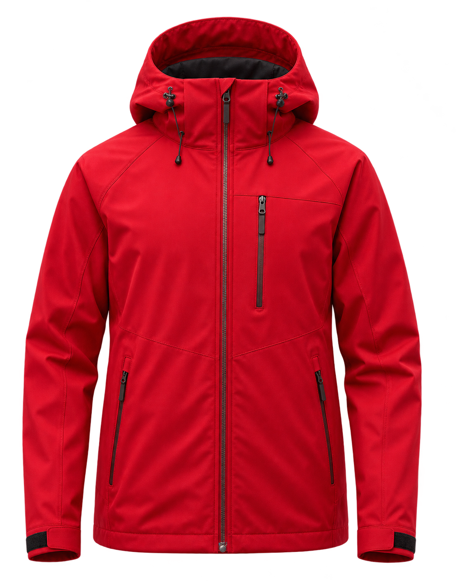
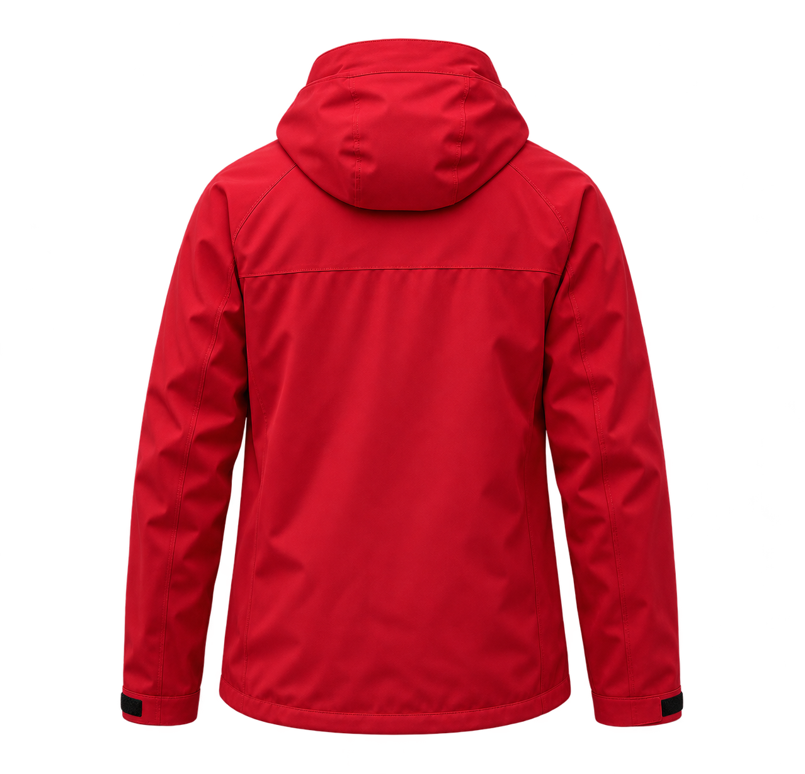
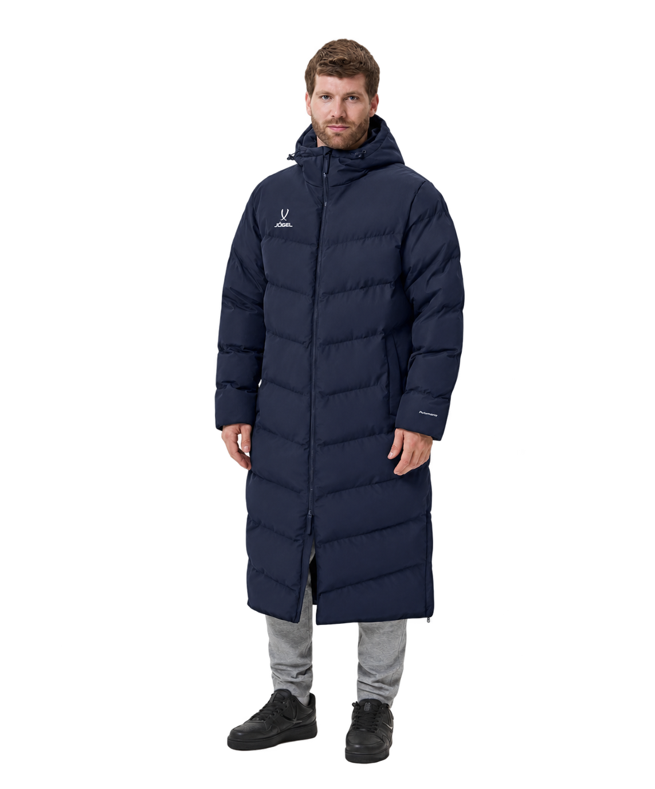
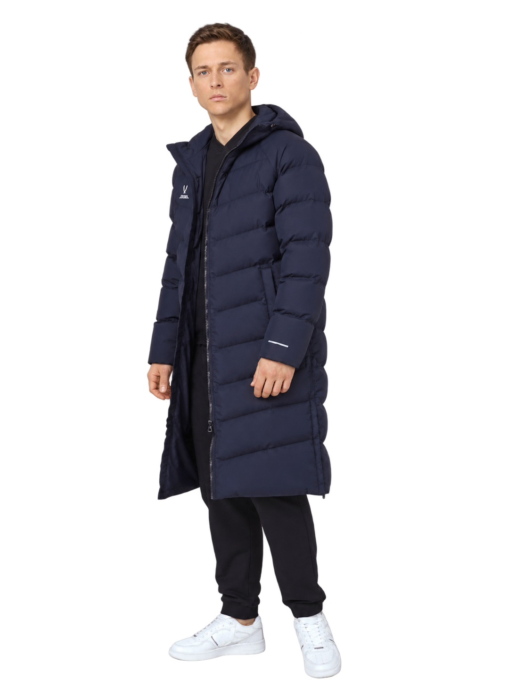

Скорость
Быстрее создаём
фото и видео


Преимущества нейросетей и опыт российских брендов в фэшн и спорте
Описание процессов работы и демонстрация прототипа
Преимущества, риски и экономика системы
Как определить место ИИ в единой системе создания контента?
Новые модели дают больше реализма и контроля над фото и видео
Быстрее создаём
фото и видео
Для ряда задач
дешевле съёмки
Больше вариантов
за меньшее время
Заполняем карточки
до прихода товара
Реализм не заменяет проверку товара. Экономику подтверждаем в пилоте.
Источники: Dunn et al., 2026 · Google DeepMind, октябрь 2026
От карточек товара до рекламных кампаний
Задача: увеличить объём контента, ускорить производство и снизить себестоимость, сохранив единый визуальный стиль.
визуала создаётся нейросетями
сокращение срока производства
рост конверсии из показа в карточку
Аудитория лучше реагировала на лаконичный визуал с нейтральным фоном.
Эстетика реальной съёмки поможет уменьшить ощущение искусственности и поддержать доверие к фото и видео.
Опыт Спортмастера: пример работающего процесса в нашей сфере. Наш эффект проверяем по метрикам, особенно по проценту выкупа в ПВЗ.
Задача: Компания хочет сохранять реалистичную посадку вещей в сгенерированном контенте. Для этого она сохраняет реальную каталожную съёмку и использует её как основу для имиджевых материалов.
Каталожные фотографии фиксируют посадку, конструкцию, фактуру и цвет вещи. Эти данные используются для имиджевой генерации.
изображений, сгенерированных в нейросетях
видеороликов, сгенерированных в нейросетях
срока подготовки материалов
7–10 дней вместо 4–5 недельЧтобы корректно показать одежду, нужен визуальный источник того, как она сидит на человеке.
В основе системы лежит достоверная передача посадки. Ускорение производства должно сохранять соответствие реальному товару.
Задача: Ускорить вывод новинок на маркетплейсы: готовить визуал из доступных материалов, пока товар ожидает студийной съёмки, сохраняя достоверное отображение изделия.
карточек в день
Исходники: шоурум, манекен, раскладка, телефонные фото и эскизы.
Конструкторы и продакты сверяют посадку, ткань и принт. При обнаружении расхождений товар возвращается на этап генерации.
Для достоверного отображения изделия нужна точка подтверждения от человека, знакомого с товаром. В нашем процессе эту роль выполняет продакт-менеджер: он проверяет соответствие вещи и посадки перед использованием контента.
Создание контента в нейросетях должно сопровождаться экспертной приёмкой. Поэтому согласование с нашим продакт-менеджером является одним из ключевых этапов нашей системы.
Одна согласованная карточка образа для фото и видео
нашей системы генерации фото- и видеоконтента
Для точного результата системе нужны данные о том, как вещь сидит.


Посадка и отображение деталей: проблема всех брендов, переходящих на ИИ.
Манекен + телефон
Фотостанция с манекеном
Основная опора для генерации корректного контента.
Снижаем себестоимость создания контента
Ускоряем подготовку новых материалов и обновление каталога
Поддерживаем единый визуальный стиль каталога
Делаем работу по созданию контента более доступной для персонала
в среднем за один ролик
в среднем за одно изображение
Целевые значения. Фактические затраты подтвердим в пилоте.
Больше контента для маркетплейсов с меньшими затратами
Ограниченная подача менее приоритетных позиций
Дополнительные ракурсы, детали и видео
Больше внимания позициям, которым раньше не хватало ресурсов
По каждому артикулу нужен понятный план: какой контент создаём и почему
Флагманы, локомотивы, потенциальные хиты продаж
Новинка, UPD, текущий ассортимент
Маржа, остатки, прогноз
УТП, требования к ракурсам и деталям
Статистика продаж, позиция в выдаче (при наличии данных)
Образцы для съёмки, сроки их поставки
Цель: автоматически подбирать вариант съёмки и создания контента для каждого артикула
Локомотивы продаж и Tier-1 коллекции
Реальная съёмка задаёт основную подачу флагманов. ИИ помогает расширять контент.
Да пребудет с вами сила.
Что доработать в представленном процессе работы, текущей версии прототипа и этапах согласования контента?
Обратная связь по этапам интеграции, объёму тестирования и экономике проекта.
Какие дополнительные функции системы нужны бизнесу в текущем процессе создания контента?
Собрать потребности отдела маркетплейсов в ракурсах для основных задач дизайнеров и определить дополнительный функционал, который упростит работу с нейросетями.